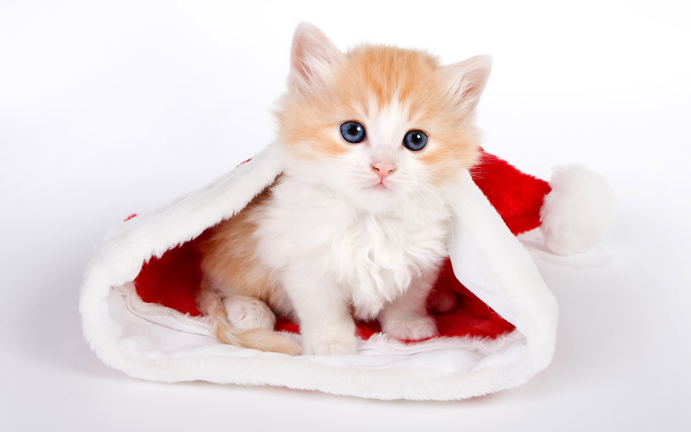
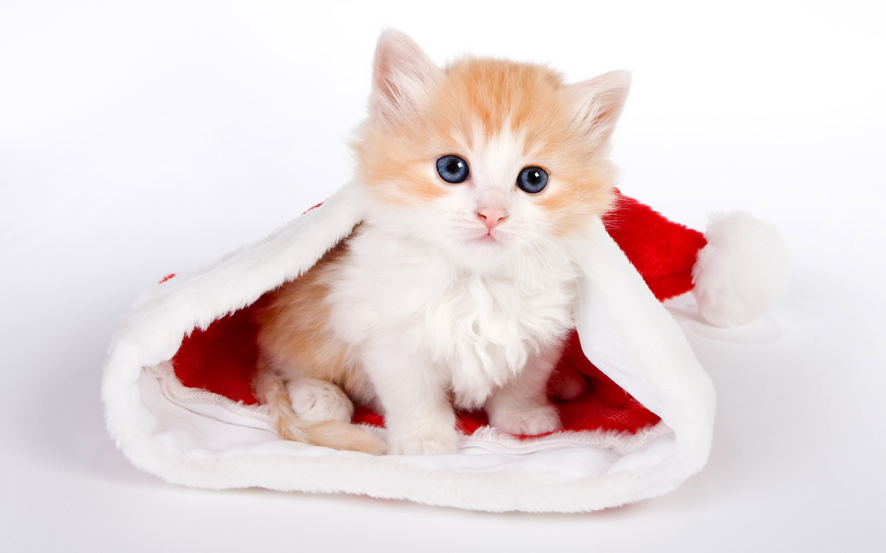

The Seregeti is a breed of domestic cat, first developed by crossing a Bengal (domestic and wild hybrid) and an Oriental Shorthair. Recognized and registered by The International Cat Association(TICA),no other first genereation crosses can be registered as Serengeti. RFrom the Beengal X Oruental cross came the first foundation Serengeti. Breeders then worked with the cat to produce a cat that resembles the breed profile set by TICA. Created by Karen /sausman of Kingsmark Cattery in California in 1994, the breed is still in the development stages, but the ultimate aim is to produce a cat that looks simialr to a serval, without using any recent wild cat blood.
 
